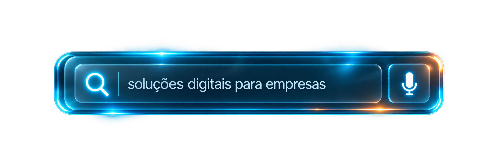
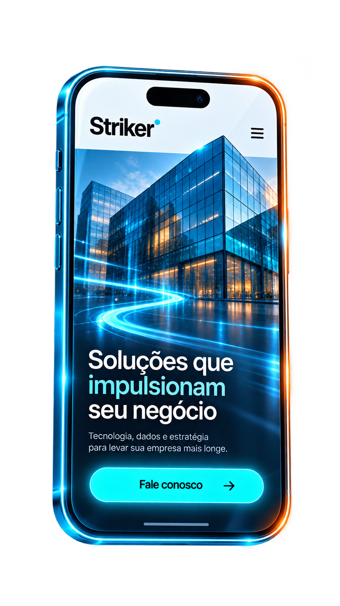
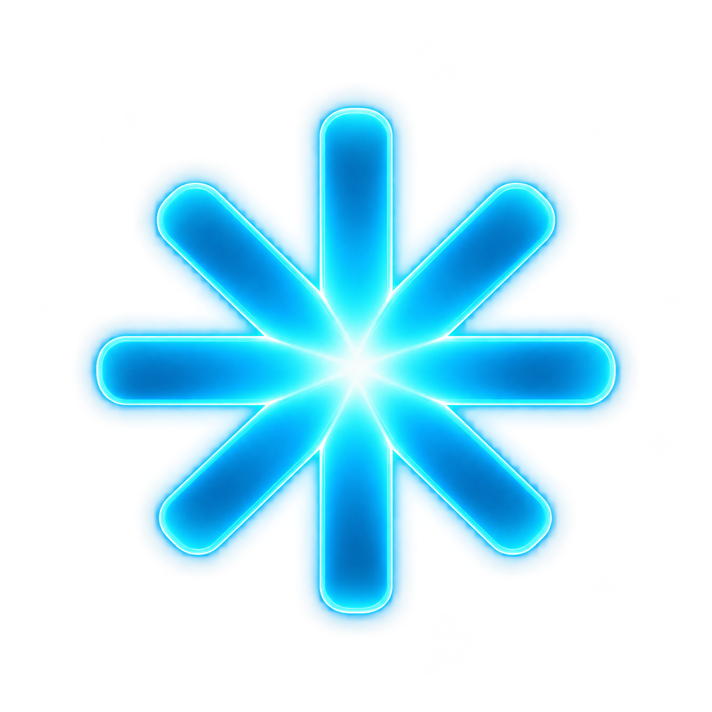
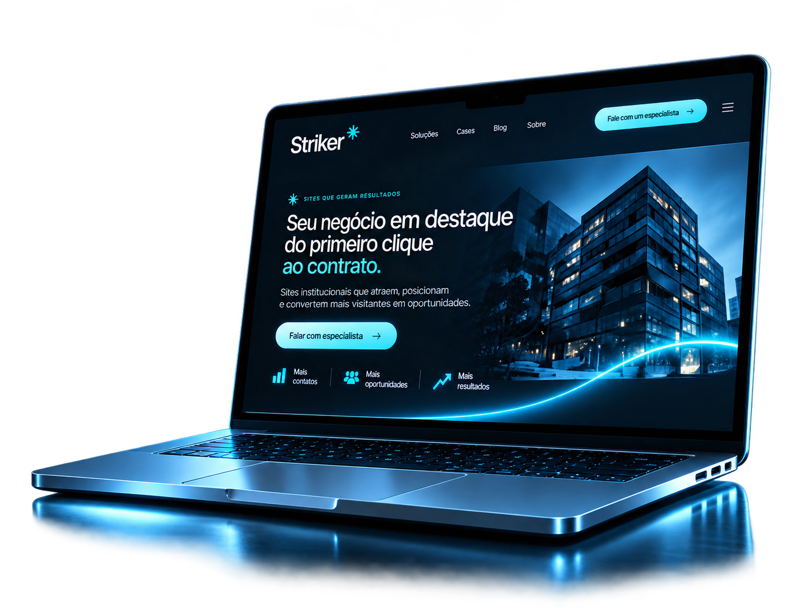

Gera atenção.
Mostra movimento, rotina, conteúdo e bastidores.
Apresentação digital × Clareza × Conversão
A Striker cria apresentações digitais profissionais que concentram as informações importantes da sua empresa em um único lugar e conduzem o visitante até a próxima ação.
Quero melhorar minhaSua empresa pode ter um ótimo atendimento, excelentes avaliações e um serviço que realmente entrega resultado.
Mas, antes de descobrir tudo isso, o cliente precisa entender quem você é, o que você faz e como falar com você.
Conheça o que fazemosAlguém precisa exatamente do serviço que sua empresa oferece.
Abre o Google, pesquisa, vê boas avaliações e fica interessada.
Clica no Instagram, procura os serviços, volta para o Google. Tenta encontrar valores, localização e como funciona.
Precisa abrir outra página. Depois outra. Até que aparece uma empresa concorrente onde tudo está mais claro.
O problema nunca foi necessariamente o seu serviço.Ele aconteceu antes de você ter a oportunidade de conversar com aquele cliente.
Quanto mais esforço alguém precisa fazer para entender o seu negócio, maior é a chance de abandonar o caminho.
Mostra movimento, rotina, conteúdo e bastidores.
Ajuda quem já está pesquisando a encontrar sua empresa.
Aproxima você de quem está pronto para dar o próximo passo.
A peça que conecta tudo. Quem você é, o que faz e como contratar.
Instagram e site não precisam competir.
Eles trabalham juntos.
Entender → Confiar → Entrar em contato
Muitas empresas já possuem tudo o que precisam para convencer um cliente.
Nosso trabalho é transformar isso em uma estrutura profissional.
Apresentação clara da empresa e dos profissionais, com serviços organizados e fáceis de encontrar.
Fotos, avaliações, localização, horários e informações importantes para ajudar o cliente a decidir.
Uma estrutura adaptada para celular e preparada para receber pessoas vindas do Google, Instagram e anúncios.
Botões estratégicos e integração direta com WhatsApp ou agendamento. Sem caminhos desnecessários.
Quero melhorar minha presença digitalMais clareza para o cliente.
Mais resultados para sua empresa.
Você não precisa simplesmente de um site. Precisa de um ponto central para sua presença digital.
Imagine alguém chegando à sua página e encontrando uma apresentação clara da empresa. Ela entende seus serviços, conhece seus diferenciais e tira as principais dúvidas.
E quando decide conversar com você, um botão leva diretamente para o WhatsApp.
Quero conversar sobre meu projetoEntender quem somos e o que fazemos.
Ver como podemos ajudar o seu projeto.
Conhecer nossos diferenciais e resultados.
Falar com a gente pelo WhatsApp.
Você acompanha o projeto. Nós cuidamos da execução, sem linguagem técnica desnecessária e sem você precisar entender programação.
Conhecemos seu negócio, seus serviços e o tipo de cliente que você deseja receber.
Reunimos as informações e definimos uma estrutura que facilita a decisão.
Transformamos a estrutura em uma apresentação digital clara, com você acompanhando o projeto.
Entregamos tudo pronto para apresentar sua empresa e conduzir o visitante até o contato.
A pessoa pode chegar pelo Google, Instagram, anúncio, indicação ou QR Code. O objetivo é o mesmo: transformar interesse em ação.
Depoimentos que mostram como uma apresentação digital clara gera confiança e contato.
Ter um site não significa necessariamente ter uma boa presença digital. Talvez o problema não seja criar algo do zero, mas reorganizar a experiência.
Quero analisar meu siteVocê não controla quantas empresas ele vai comparar. Mas pode controlar a experiência que ele terá quando conhecer a sua.
Vamos olhar para sua presença digital

Ficou com alguma outra dúvida?
Fale com a StrikerSão ferramentas diferentes. O Instagram ajuda a produzir conteúdo e relacionamento. O site funciona como uma apresentação central da empresa, onde o visitante encontra as principais informações e consegue seguir diretamente para contato ou agendamento.
Sim. Podemos criar chamadas estratégicas ao longo da página para que o visitante entre em contato diretamente pelo WhatsApp e, quando fizer sentido, já com uma mensagem inicial preparada.
Sim. Primeiro avaliamos a estrutura existente. Dependendo do caso, podemos reorganizar a experiência ou recomendar uma nova estrutura.
Sim. A experiência mobile precisa ser prioridade, principalmente porque grande parte das pessoas pesquisa empresas pelo próprio celular.
Não. Nosso papel é cuidar dessa parte e transformar as informações do seu negócio em uma apresentação clara e profissional.

Vamos conversarSem compromisso. Direto pelo WhatsApp.

Antes de falar sobre desenvolvimento, podemos olhar como sua empresa aparece hoje e identificar onde a experiência pode ser melhorada.
Vamos primeiro entender se existe realmente algo que faça sentido melhorar.